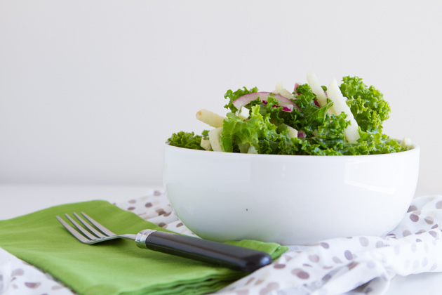

Back
Tropical Lime
Kale Salad

Ingredients:
Salad Ingredients
- 300 grams (approximately 1/2 of a medium) jicama, peeled and cut, matchstick style
- 1/2 small red onion, thinly sliced
- 1 head kale, chopped and run under hot water, massaging for 20-30 seconds
- 1/4 cup chopped fresh cilantro
- Pinch sea salt
- Freshly ground pepper, to taste
Pineapple Lime Salad Dressing
- 1 cup cubed pineapple – 180 grams
- 2 tablespoons lime juice (about 1 lime)
- Grated lime peel from 1/2 lime
- 1 teaspoon grape seed oil
- 1 garlic clove
- Dash of cayenne pepper
Directions:
- Combine salad ingredients in a large bowl. Toss to combine and set aside.
- In the jug of your blender or food processor, add pineapple lime salad dressing ingredients. Blend until smooth, about 30 seconds.
- Pour the dressing over the salad and eat right away, or chill in the fridge. It’ll marinade while it’s in the fridge, too!
- Can be kept in the fridge for up to 3 days.